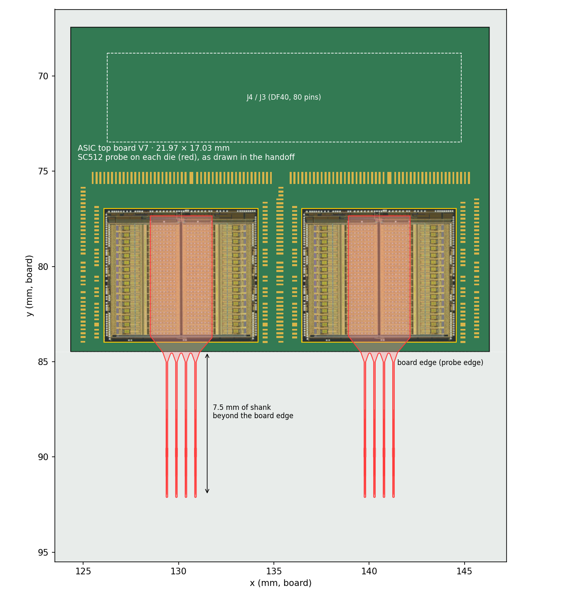
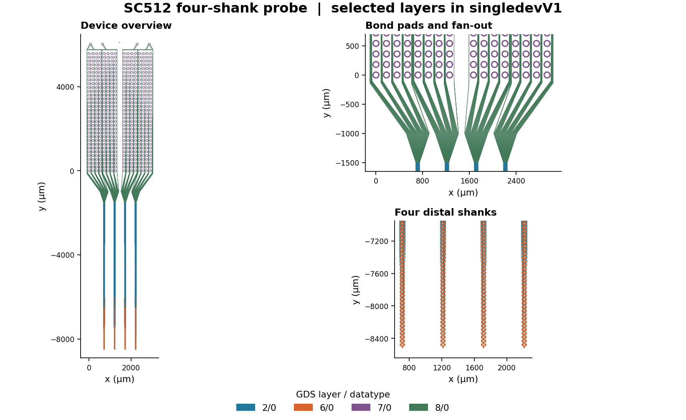

SC512 probe
Four shanks, 512 channels. One probe sits on each ASIC, so there are two per ASIC board and eight per head stack.



| Item | Value |
|---|---|
| Channels | 512 (4 shanks × 128) |
| Probe size | 3.6 × 15.2 mm, shanks about 7 mm long, 500 µm apart |
| Pad field | 16 × 32 pads at 180 µm |
| Per head stack | 8 probes, 32 shanks, 4,096 channels |
| Source | SC512 design handoff, device drawing SC512_device.oas (handoff dated 12 Nov 2026) |